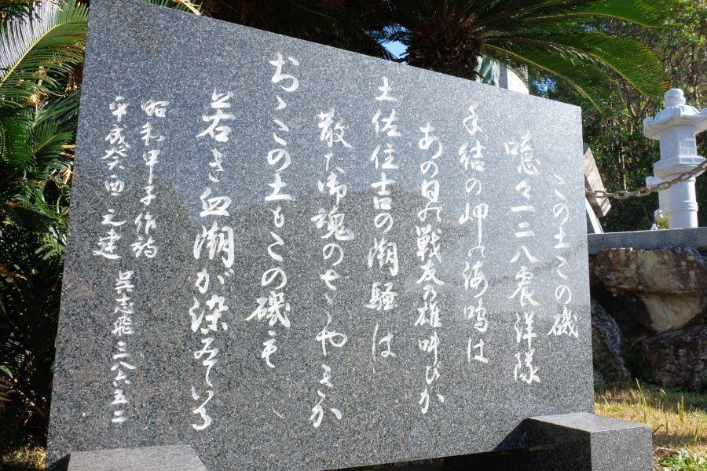

終戦翌日の爆発事故。震洋隊の悲劇 < 震洋隊 / 高知県香南市夜須町 >
敗色が濃くなった第二次世界大戦末期。
沖縄戦に敗れ、米国を主力とする連合国軍の日本本土上陸が いよいよ現実味を帯びてきた頃。米軍が上陸すると想定された太平洋岸を中心に配備された 特別攻撃部隊が、高知県の沿岸部にありました。
その場所は 高知県東部・香南市夜須町。
野中兼山ゆかりの堀込港であり 今日は時間になると橋が持ち上がる手結港や、道の駅であり 整備が行き届いた海岸 ヤ・シィパークがあるエリアです。
かつて特攻基地だった住吉海岸
国道55号、香南市夜須町付近を通行すると、
"住吉海岸"
"震洋隊慰霊碑"
と記された標識が目に入ります。
かつてこの場所に 海軍の特殊攻撃部隊が置かれていました。
国道から少し下ったところにあるのが、
震洋隊殉国慰霊碑(高知県香南市夜須町)
特殊攻撃艇・震洋とは
木で組まれたモーターボートの船首に爆弾を搭載。敵艦に突入することで体当たり攻撃を加える、特殊攻撃＝特攻。
神風(航空特攻) や 回天(人間魚雷) 等、他の特別攻撃と同じく 出撃したら最期。攻撃と引き換えに乗組員は絶命する、恐ろしい兵器です。
沖縄が落ち、連合国軍の本土上陸が囁かれ始めた頃、高知県や宮崎県 千葉県など、米軍が上陸するのは南からであろう との想定の下、太平洋岸を中心に震洋が配備される。
震洋の扱いは、艦艇ではなく兵器。
つまり 1艇(＝1命)の出撃が、鉄砲を一発撃つのと同じ、という事。戦闘の中で、実弾の発射を 一発一発記録することはありません。
また、一度出撃すると 部隊ごとほぼ全滅してしまうことから、運用や戦果については記録が乏しく 実情が不明な点が多い。
昭和20年(1945)の フィリピンを巡る攻防戦の頃から運用され始め、米軍の史料によると 1月のルソン島の戦いで自軍の艦艇四隻が損害を受けたことが記録されている。
終戦翌日の爆発事故
ここ 住吉の地には海軍第128震洋隊の出撃基地が置かれ、多くの震洋艇が配備され 出撃に備え、日々訓練が行われていた。
幸い 高知県沿岸部まで敵艦が接近することや、震洋の出撃命令が出ることはなく、8月15日の終戦を迎えた。
間もなく武装解除が行われ、特攻によって命が失われることがなく... となるはずでした。
終戦翌日の8月16日夕方。
停戦命令が出ているはずの司令本部から出撃命令が下り、兵士全員が出撃準備に就いたその時。震洋に搭載されている火薬が爆発し、配備してあった他の震洋艇に 次々飛び火して、大爆発事故が発生。終戦を迎えた海軍兵士111名の命が 爆発事故によって、一瞬のうちに失われた。
この爆発事故は 兵士の誤操作説はもちろん、
降伏したことにより悠々と土佐沿岸に接近する連合国軍艦隊に 一矢報いようと、指令部が独断で攻撃を指示した説。
進駐した連合国軍に 兵器を接収されるのを防ぐために、爆破処分による隠滅を行った説。
など、様々な憶測が飛び交っていますが、事実は 終戦の翌日に 100人を超える尊い命が失われた事。
現在の住吉海岸

事故後、国に殉じた海軍兵士たちの冥福を祈って 慰霊碑が立てられた。
現在は漁を行う住民の生活拠点となり、とても静かな住吉海岸。
今の平和な風景が、失われる必要をなくして亡くなった111人の兵士たちへの、何よりの餞(はなむけ)であるように感じます。
関連記事
2017,12/7 高知龍馬空港近く、かつての海軍基地の遺構 < 前浜掩体壕群 / 高知県 >
2017,1/13 四国にもあった特攻部隊 < 白菊隊 / 高知・徳島>
2018,5/30 静かな漁村は、かつての特攻基地 < 宿毛基地 / 高知県宿毛市 >
近隣
2018,3/19 新旧が混在する土佐藩ゆかりの港 < 手結港 / 高知県 >
2018,6/23 四国最南端の地から出た、日本人米国留学生第一号 < ジョン万次郎 / 高知県土佐清水市 >
2018,12/8 ユニークな駅名の高知県の鉄道交通中心地 < 後免駅 / 高知県南国市 >
2018,12/14 あだ名は無人島。太平洋一人ぼっちを経験した漂流民 < 無人島長平 / 高知県香南市香我美町岸本 >
震洋隊慰霊碑
< 自家用車 >
高松駅から 約2時間10分、138km
高知龍馬空港から 約20分、11.3km
< 公共交通機関 >
土佐くろしお鉄道 西分駅下車 徒歩約30分、2.4km
土佐くろしお鉄道 西分駅下車 徒歩約34分、2.6km
※ 主な地点からの最速・最短距離